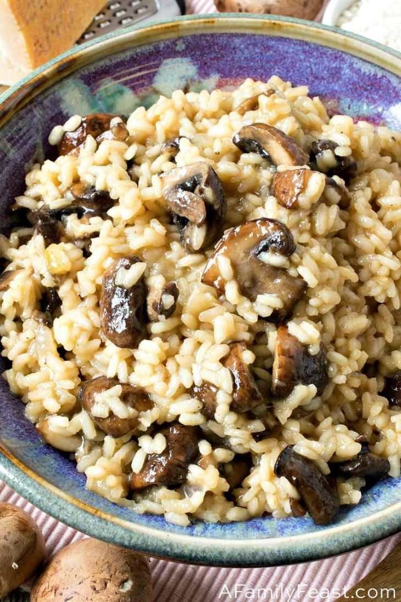

Spicy Risotto

Description
This is a simple dish that is easy to batch cook and it is very filling to boot!
Despite the name this is not a risotto but a kind of beef curry. Anyway risotto sounds more fancy and more importantly, with only 7 ingredients and two vegetables to chop, this is easy to make in a pinch.
Ingredients
Serves 4
- 500g Beef Mince
- 1 Onion
- Garlic Granules
- Pack of Mushrooms
- Spice Paste (2-4 tbsp)
- 1 Beef Stock Cube
- Rice (1/2 cup per serving)
Steps
25 minutes
- Heat up a large pan and put the kettle on for the rice (leave some water for the other pan later). Oil is optional as the mince may have enough juices
- Put the required amount of rice and double the amount of boiled water in a covered saucepan on medium-low heat. Check back occasionally as the rice is finished when the water has boiled away
- Chop the onion into small chunks
- Put the mince in the large pan, stirring frequently and breaking down the mince, and cook until browned
- Meanwhile, wash and chop the mushrooms into thin slices
- Once the mince has browned, add the onion
- When the mushrooms are prepared add them to the pan and heat until they reduce down a bit
- Pour a little of the remaining water from the kettle into the large pan along with the beef stock cube, the spice paste, and the garlic granules
- Heat until most of the water disappears, then add salt and pepper to taste
- Serve the rice on a plate or shallow bowl and stir in a few scoops of the sauce